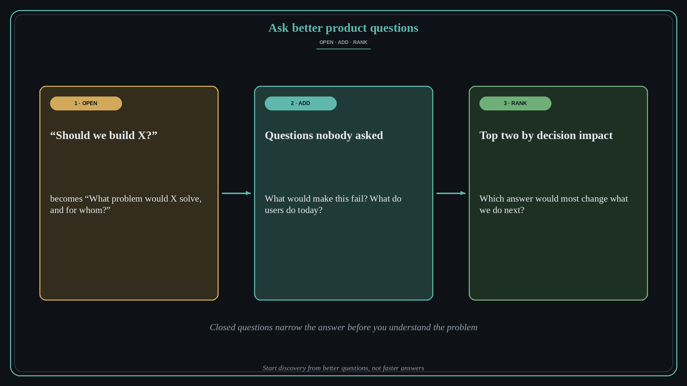

Ask better product questions: open, add, rank
Source: George Nurijanian (@nurijanian)
original post
What it claims
George Nurijanian distilled “asking better product questions” into a reusable AI skill he uses when he is stuck. You paste in the problem, and it does three things: it opens up the closed questions, adds better ones, and then ranks them.
Why it matters for a PO
Many product problems arrive as closed questions: “Can we add X by Q2?” or “Should we build A or B?” A closed question narrows the answer before anyone has understood the problem, so discovery and refinement start in the wrong place. Rewriting it as an open question, widening the set, and ranking by what would most change the decision gives the team a better starting point, with or without an AI helper.
3 takeaways
- Spot closed questions (yes/no, either/or) hiding in the problem statement.
- Rewrite each one as an open what, how, or why question.
- Add the questions nobody asked, then rank them by how much the answer would change your decision.
Practice this week
Take the decision you are stuck on. Write down the closed questions in it, rewrite each as an open question, add three new ones, and pick the top two by decision impact. Use those two to frame your next refinement or discovery session.